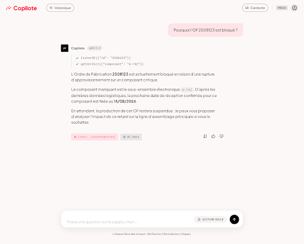
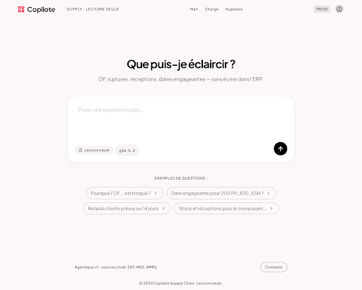

EXPÉ — /suivi × ChatGPT · table proactive + vues sidebar + composer NL · plein écran
ChatGPT UX × charte Airbnb — toggle Empty / Thinking / Tools / Réponse · plein écran
ChatGPT achromatique (sans charte) · plein écran

Conversation — colonne unique, source chips, historique/contexte en ghost · HTML

Landing v1 (sans glow) · HTML